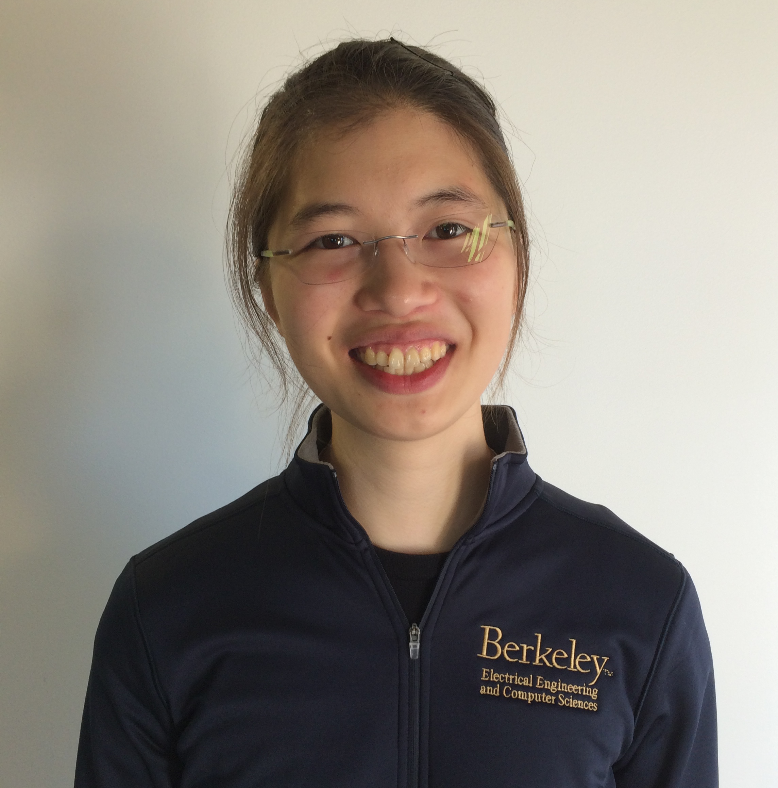
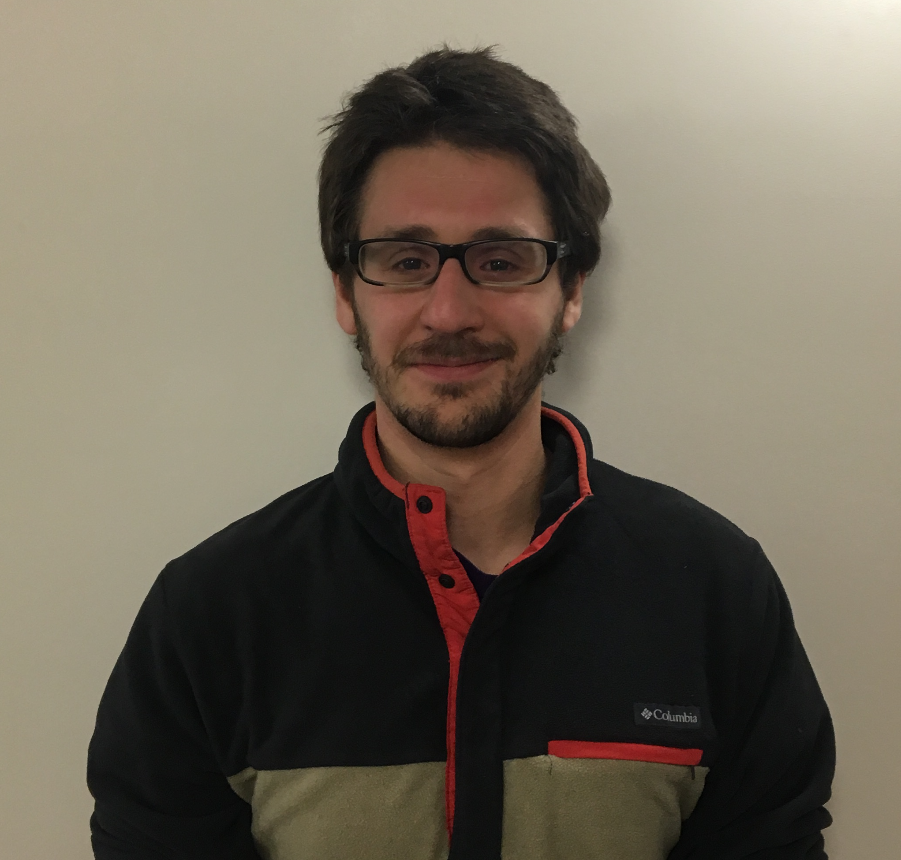

The Team
Flow is created by and actively developed by members of Professor Alexandre Bayen's Mobile Sensing Lab at UC Berkeley: Cathy Wu, Eugene Vinitsky, Aboudy Kreidieh, Kanaad Parvate, Nishant Kheterpal, Kathy Jang, and Ethan Hu. Alumni contributors include Leah Dickstein, Nathan Mandi, Ananth Kuchibhotla, and Arjun Sridhar.
Get in touch with us using the mailing list at flow-dev@googlegroups.com.
Team Members
Prof. Alexandre Bayen
Institute for Transportation Studies; Electrical Engineering and Computer Sciences; Civil and Environmental Engineering

Cathy Wu
Electrical Engineering and Computer Sciences, PhD student

Eugene Vinitsky
Mechanical Engineering, PhD student

Aboudy Kreidieh
Civil and Environmental Engineering, PhD student
Fangyu Wu
Electrical Engineering and Computer Sciences, MEng student

Kathy Jang
Computer Science, undergraduate

Kanaad Parvate
Electrical Engineering and Computer Sciences, undergraduate

Nishant Kheterpal
Electrical Engineering and Computer Sciences, undergraduate

Ethan Hu
Applied Mathematics; Statistics, undergraduate